Gallery
Output from the example scripts that ship in Epicycle/examples/.
A Trajectory on the Globe
A view of Earth and an orbit.
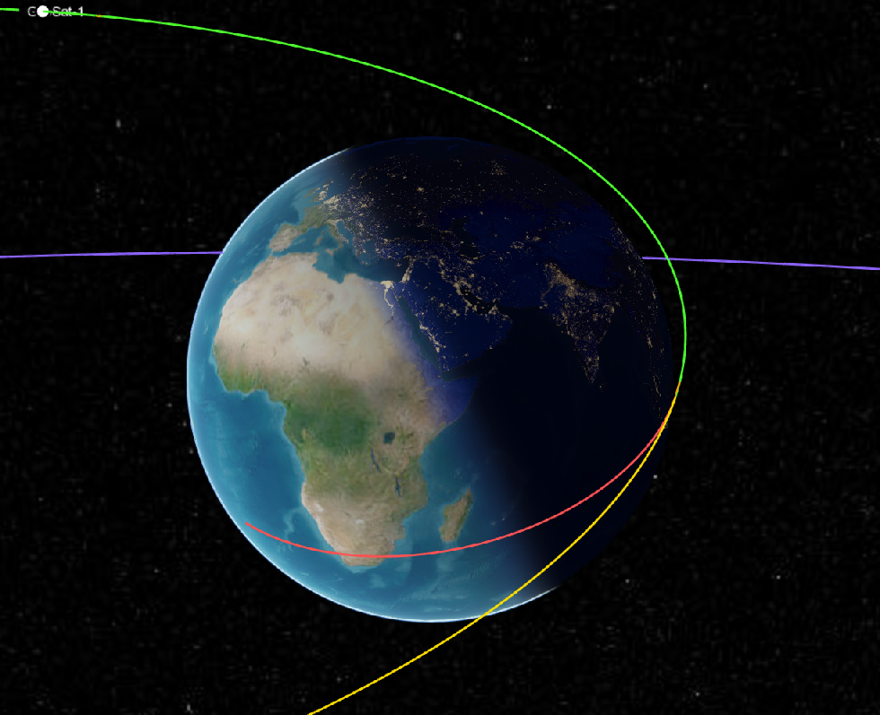
Working in the Editor
This is Ex_HohmannTransfer.jl open in VS Code with the solver report in the terminal.
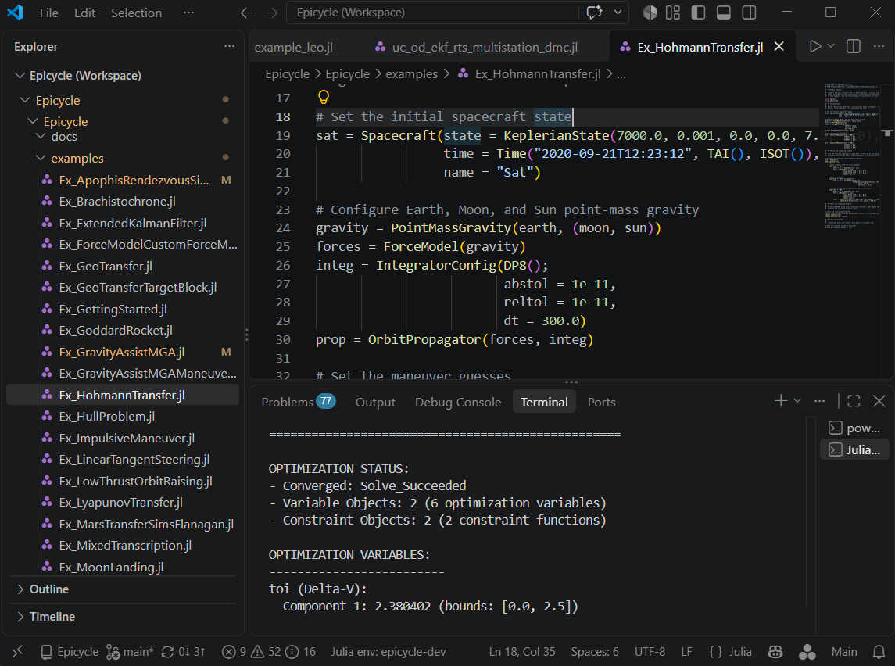
Propagation and Targeting
A Hohmann transfer between two circular orbits.
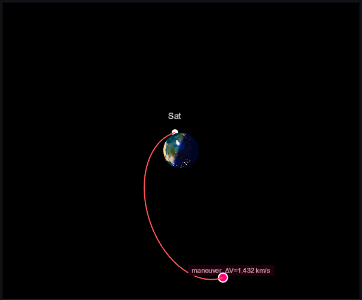
A geosynchronous orbit transfer.
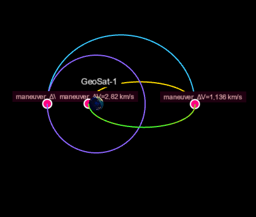
A close-proximity transfer onto a safety ellipse, in the chief's rotating frame. The arrows are the thrust direction.
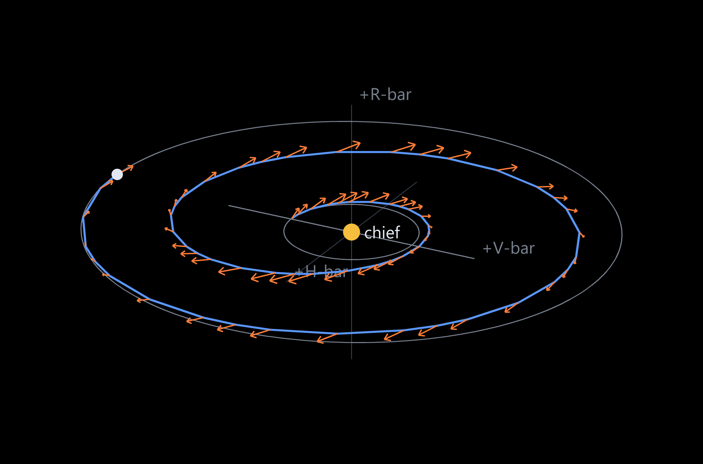
Optimal Control
Low-thrust orbit raising.
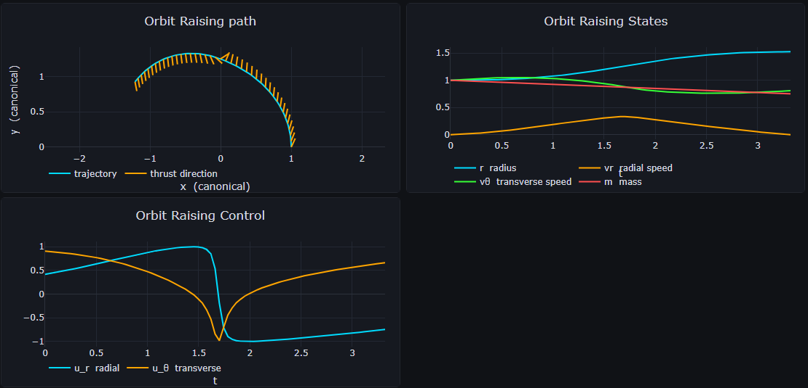
Low-thrust orbit raising with three phases, each with a different transcription — zero-order hold, Hermite-Simpson and Legendre-Gauss-Lobatto.
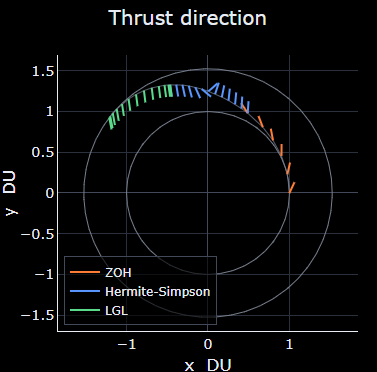
The Goddard rocket problem.
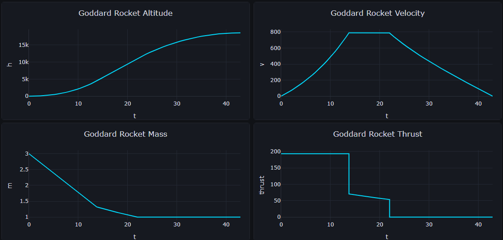
The linear tangent steering problem.
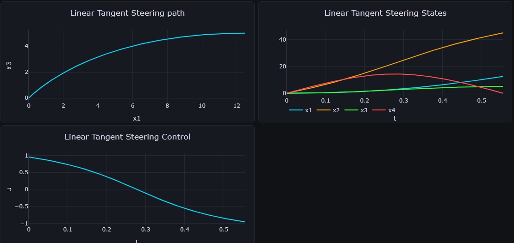
A minimum-time route between two keep-out zones, where the clearance is a path constraint.
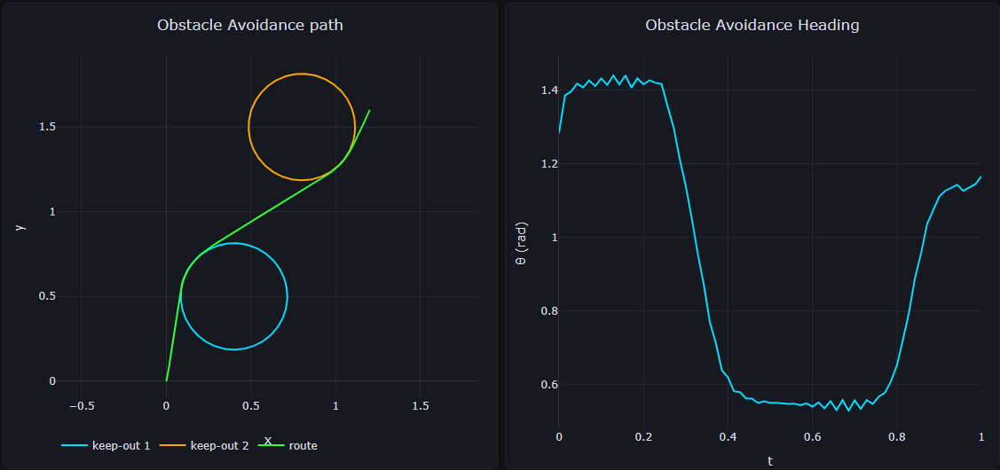
A transfer between L1 and L2 Lyapunov orbits.
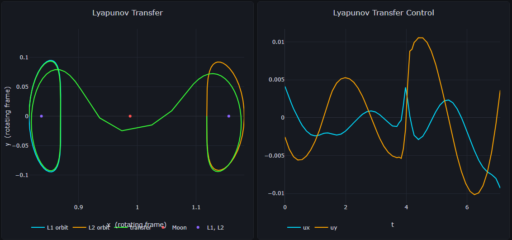
Interplanetary
An Earth to Apophis rendezvous with Sims-Flanagan transcription.
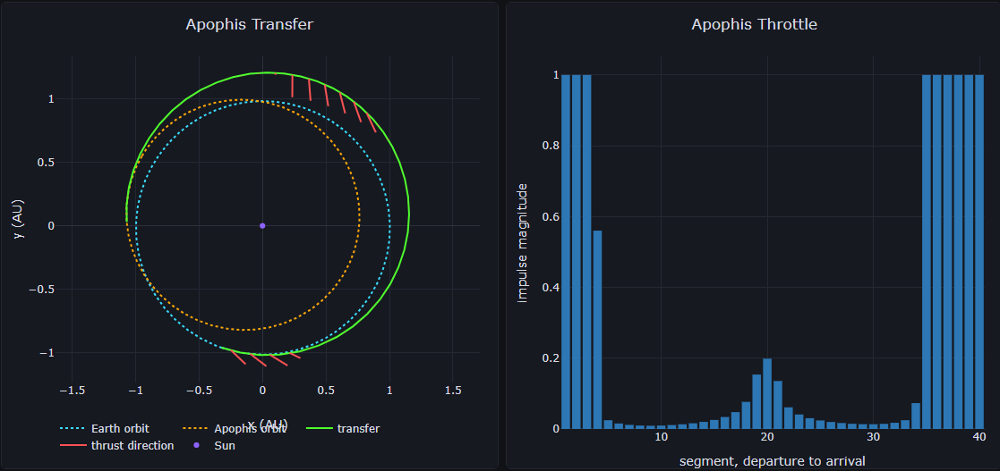
An Earth-Earth-Venus gravity assist.

Orbit Determination
A batch least-squares fit to six hours of range and Doppler tracking from two ground stations.
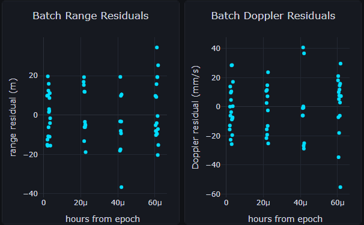
A filter set up to process measurements as they arrive.
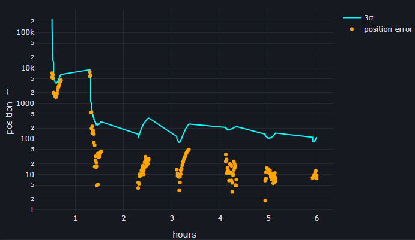
A filter-smoother solution.
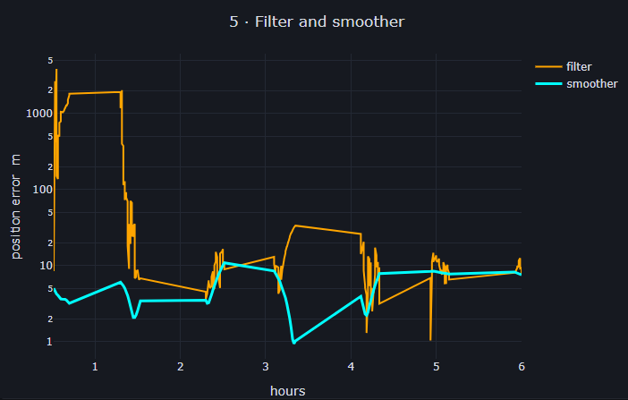
Stepping the filter one observation at a time, with the postfit residuals and the formal sigma recorded at each update.
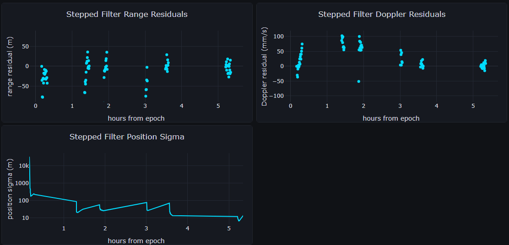
Plotting
A gallery of supported data visualization styles.
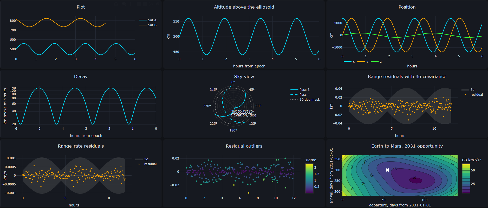